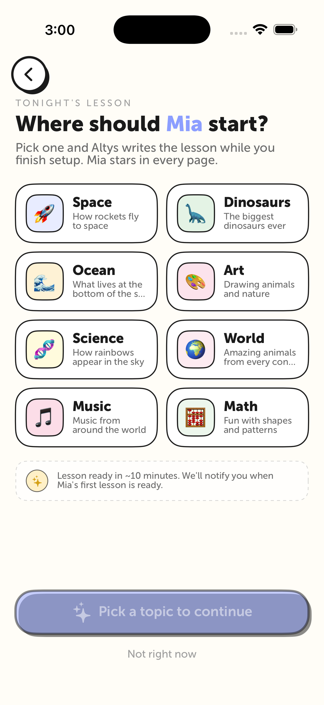
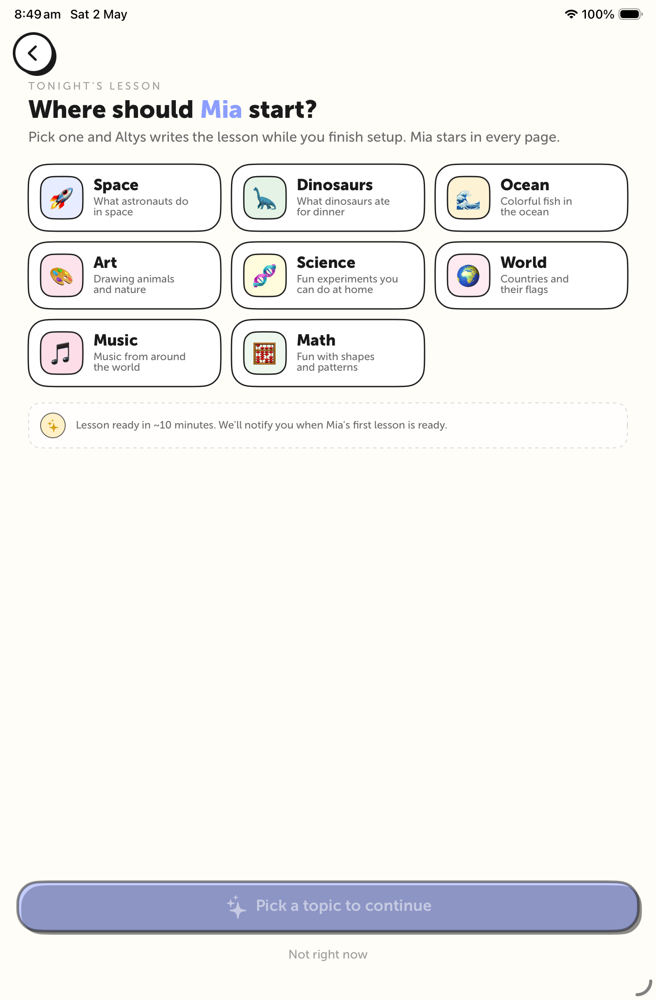
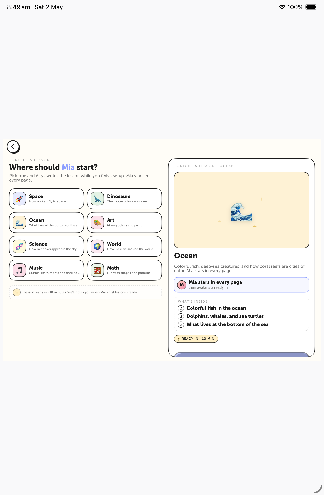

SwiftUI · Built · Running on Simulator
Lesson kickoff — shipped
Three screenshots from the actual built app: iPhone, iPad portrait, and iPad landscape (master-detail split). Real Swift, real `GeometryReader { isLandscapeIPad }` branching, real `TopicCategory` data.
A · iPhone
iPhone Air · 2-column catalog
Hero, 2-col grid of all 8 topics with sample-lesson teasers, helper card, and the disabled CTA waiting on a selection.

B · iPad Portrait
iPad mini · 3-column catalog
Same screen on iPad portrait. Grid auto-expands to 3 columns (8 topics fit in 3 rows: 3 / 3 / 2). Generous padding, readable spacing.

C · iPad Landscape
iPad mini · master-detail split
The creative direction you asked for. Two columns: hero + 2-col topic grid on the left, rich preview panel on the right with the selected topic's emoji art tile (with sparkles), blurb, "Mia stars in every page" callout with avatar pip, numbered "What's inside" list, and the "READY IN ~10 MIN" pill.

Note: rendered via the harness at the actual 1180×820 dimensions, scaled to fit the iPad mini portrait viewport for the screenshot. The layout itself is the real `isLandscapeIPad` branch from the GeometryReader.
Notes: the ContentView.swift is currently rigged as a screenshot harness pointing straight at SellFlowLessonKickoffScreen. I'll revert that before any commit. The real Swift changes are in SellFlowLessonKickoffScreen.swift (full rewrite) and TopicCategory.swift (added slides(forAge:) and description(forChildName:)). Build is clean on iPhone 17 Pro sim.